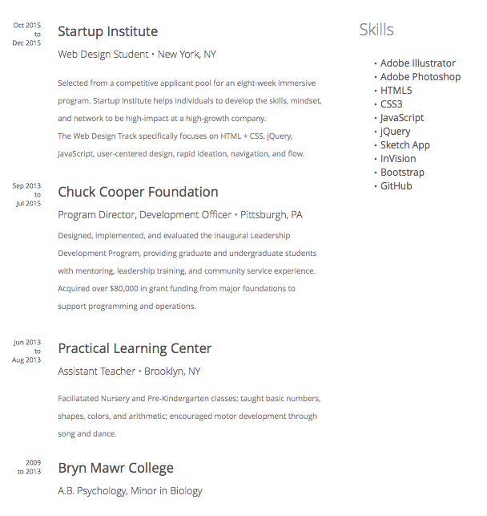

UX/UI Design + Front-End Development


Hello from Brooklyn! I am currently a Web Design student at Startup Institute New York and an aspiring UX/UI Designer with a love for front-end development.
My background includes a BA in Psychology from Bryn Mawr College and experience in non-profit development and education. When I'm not finagling with ems and converting hex to RGB (and back again), I can be found stargazing, drinking tea, or hanging out in cat cafes.
Interested in working with me? Contact me for more information!

Campus Perks: UX/UI Design and Front-End Development
Cheese Sammies: UX/UI Design and Front-End Development



Feel free to contact me via e-mail at acmartine[at]gmail.com. You can also find my chronicles on Twitter as @arielebydesign or, if you're in a more formal mood, on LinkedIn.